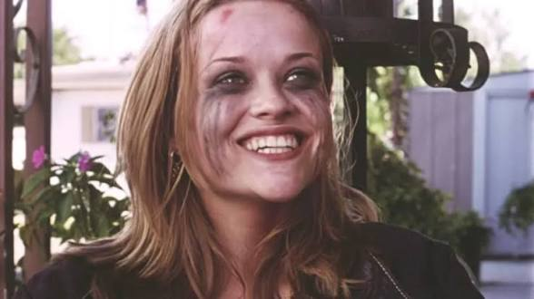
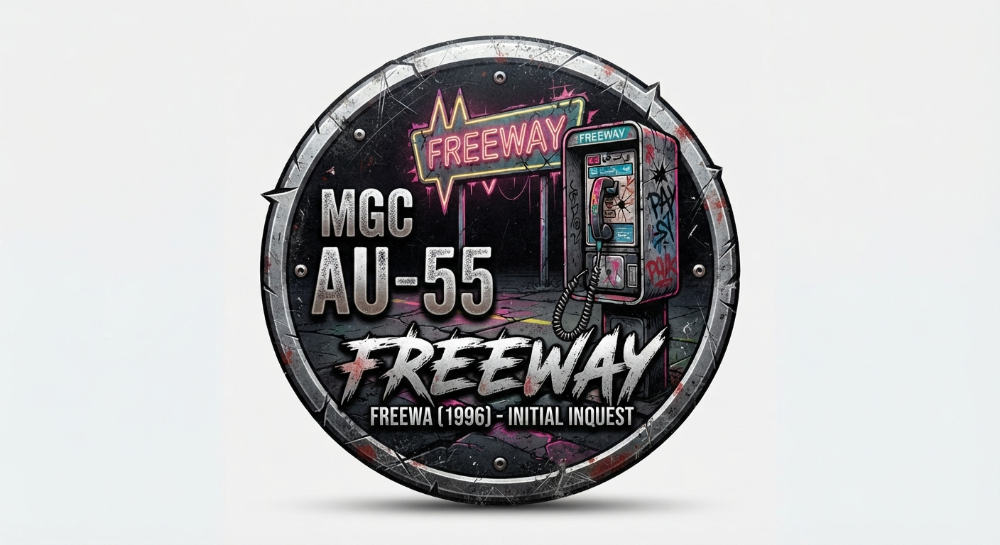

👧🏼 🛣️ 🐺 FREEWAY (1996) — CERTIFIED MGC AU-53


🏛 MGC LOWER COURT OF APPEALS
- ASSET TITLE: Freeway (1996) – The Official Red Riding Hood Exploitation Ledger
- OFFICIAL REGISTRY GRADE: Certified MGC AU-53 (About Uncirculated / High-Velocity Satire)
- LOWER COURT JURISDICTION: Judge Tina, Chief of Cult Classics
- CASE FILE: #037
📜 THE FORENSIC NARRATIVE BREAKDOWN & RECOVERY
Tina steps up to the velvet-lined mahogany bench of the AU court, adjusts her magnifying lens, and examines Matthew Bright’s unhinged, pitch-black fairy-tale satire.
🚨 Key Coin Features:
1. Towering Performance Luster & Uncirculated Strike Depth
- Under close 5x magnification, Freeway boasts an elite, incredibly powerful performance strike that defies its low-budget, 90s indie-exploitation planchet. Reese Witherspoon turns in a legendary, ferocious, and completely uncirculated performance as Vanessa Lutz—a foul-mouthed, illiterate, but completely unbreakable teenager navigating the gritty underbelly of I-5. Her raw screen gravity and uncompromising survival instinct carry the entire film’s engine, beautifully balanced by Kiefer Sutherland’s deeply disturbing, calculated turn as the psychopathic counselor Bob Wolverton. The dialogue is razor-sharp, cutting through the dark subject matter with a ferocious, deadpan satirical wit that gives the coin exceptional eye appeal for cult collectors.
2. Localized Defects: Third-Act Courtroom Friction & Genre Scuffs
- However, under our strict forensic lens, the asset hits a localized narrative pacing scuff in the final act. Once Vanessa escapes the road and the plot locks into the institutional courtroom and juvenile detention framework, the explosive kinetic drive of the second-act road trip experiences a noticeable structural bottleneck. The character logic briefly stalls out as the film navigates necessary legal setups to position its final confrontation, causing a slight loss of narrative luster. These highly localized pacing constraints permanently bar the coin from climbing past the AU boundary line into the pristine, flawless Mint State vaults.
3. Distinct Satirical Metallurgy & The Definitive AU-53 Allocation
- Despite the third-act friction, Freeway protects its high-end placement perfectly at the MGC AU-53 mark. The production avoids slipping into the lower circulated registers thanks to its masterful, boundary-pushing subversion of the Little Red Riding Hood archetype, backed by an elite supporting cast (including Bokeem Woodbine and Brittany Murphy) and a gritty, sun-baked California highway aesthetic. It stands as a premier piece of high-velocity indie cinema alloy—flawed by its late-stage structural pacing scuffs, but retaining incredible strike quality on all primary high points.
⚖️ THE CHIEF’S FINAL DECREE
- Tina raises the heavy-iron claw hammer high over her head, her optical sensors flashing with absolute, unyielding focus!
- The court loves the coin, but we will not be swayed with gifts. Thank You!
“Let the ledger reflect the unvarnished hard truth: this coin is a savage, hyper-saturated masterpiece of late-90s indie cinema. It wears its exploitation dirt like a badge of honor, sitting proudly on the top shelf of the AU room!”
🔨💥👗 Case Closed. Certified MGC AU-53. BLACK LABEL.

• © 2026 MOVIE GRADING CONSENSUS. All Sovereign Rights Reserved.